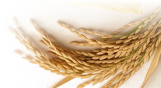
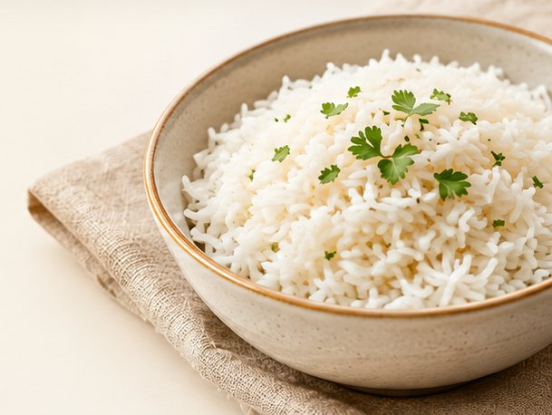
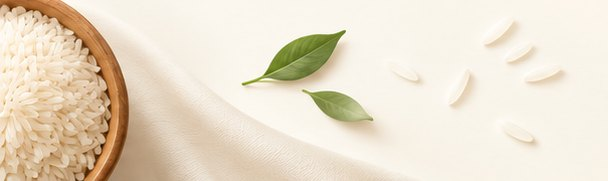

The fragrance that makes basmati an essential part of so many cherished dishes.
At SSIEL, sensory evaluation considers the aroma of cooked rice alongside its flavour, texture and appearance. It is care you experience when the dish reaches the table.
Every grain falls with patience.
Every bowl rises with pride.
From the land that nurtures it to the hands that perfect it. Discover the world behind Leysha Basmati.
Discover our roots
Leysha is part of the story of Shiv Shakti Inter Globe Exports. A story that began with a small rice mill in 1967, and grew through a lasting commitment to the grain.
Today, that experience comes to your table as Leysha Basmati. Rice chosen for its character, refined with care, and made for the many ways we cook, share and celebrate.
The journey begins
with a small rice mill.
Shiv Shakti Rice Mill
is established.
SSIEL is formed.
A wider world opens.

Rooted in the land.
Shaped by care.

An extra-long grain hybrid famous for massive post-cooking length and luxury presentation.

From careful selection
to thoughtful processing.
Patiently matured for up to 24 months so every grain releases true Himalayan aroma and elongation.

For the meals we make.
And the moments we share.

Refined through five decades of milling heritage for a fluffy, non-sticky royal texture on every plate.
A collection rooted in tradition.
Find the grain for the way you love to cook.

The fragrance that makes basmati an essential part of so many cherished dishes.
At SSIEL, sensory evaluation considers the aroma of cooked rice alongside its flavour, texture and appearance. It is care you experience when the dish reaches the table.
An elegant grain that gives a finished dish its unmistakable basmati character.
SSIEL evaluates grain length before and after cooking, with attention to elongation and separation. The result is judged in the kitchen as well as in the uncooked grain.
From delicate steam rice to golden and cream sella, a range designed around different ways of cooking.
A fragrant pulao, a layered biryani or a simple everyday meal each asks something different of the grain. Explore the Leysha range to find a rice for the way you love to cook.



Traditional recipe
Long grains reward a little patience. Pick a dish and the number of plates, and measure before you light the stove.
A starting point. Adjust for your pot, your flame and how firm you like the grain.
Meet the people, the patience and the precision behind your plate. There’s a story in every grain. Come a little closer.